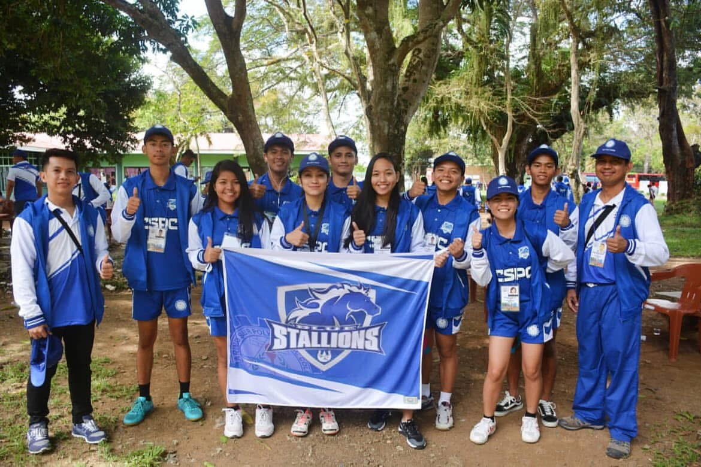
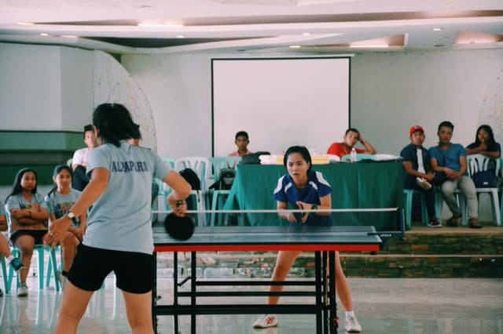

My journey as a table tennis varsity athlete began in 2019, a year that marked the start of one of the most memorable chapters of my life. I still remember the excitement and nerves as our team traveled to Masbate for the regional competition. It was my first big tournament as part of the CSPC Blue Stallions, and I had no idea it would become a story I’d carry with me for years.
That year, our Men’s Table Tennis Team made history by winning the championship title for the very first time. The atmosphere was electric—every rally, every serve, and every point felt like a step closer to something extraordinary. Standing beside my teammates, feeling the pressure and pride all at once, taught me lessons I could never learn inside a classroom.

Our Women’s Team also made a strong statement, securing 1st Runner-Up, proving that both teams were a force to be reckoned with. It was a proud moment for the entire CSPC community.
I played in the Singles A category at the championship match. The intensity of that final game is something I’ll never forget—the sound of the crowd, the weight of expectations, and the determination to give everything I had. Whether I won or lost, stepping into that arena felt like a victory on its own.

I’ll never forget how intense the championship match was. Our final score ended at 4–3, with all seven matches pushed to their limits. What made it unforgettable was how the momentum shifted—I started the game at 0–3, completely in favor of my opponent. For a moment, it felt like everything was slipping away.
But something in me refused to give up.
Point by point, I fought my way back until it became 3–3 all. Every rally felt heavier, every serve felt sharper, and every cheer from the crowd echoed inside my chest. By the time we reached the 7th and final match, I was actually leading in score. But the pressure was something I never experienced before—the crowd grew louder, the atmosphere got heavier, and the intensity multiplied with every ball that hit the table.
Even though I was ahead, the pressure and excitement of the crowd shifted the whole rhythm of the game. I could feel the tension in my legs, the sweat on my palms, and the weight of representing my team in a deciding match. My rhythm broke, and the game slowly turned in my opponent’s favor.
And yes—I lost.
But looking back, it wasn’t just a defeat. That match taught me resilience, discipline, and heart. It showed me that even under impossible pressure, I can rise, fight back, and push beyond what I thought I was capable of.
Losing that final match didn’t erase the journey—it defined it. It’s a moment I carry with pride because it reminded me that growth doesn’t only come from winning; sometimes, the most powerful lessons come from the battles we lose.
That chapter in Masbate will always be a reminder of where I started—and how far I’ve come.
Leave a comment